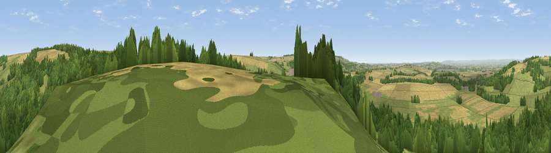

Viewpoint near North Grimston
#9303 in England · top 13% of its area beats it · near North GrimstonThe view, rendered

A 360° render of this exact spot computed from the terrain model, tree cover and land cover — summer colours, afternoon light, calibrated against photographs of famous viewpoints. Real trees, hedges and buildings will differ in detail.
The panorama
Grey silhouette: terrain skyline in each direction (720 bearings, Earth curvature and refraction included). Dashed green: skyline with trees (+15 m) and buildings (+8 m) as obstacles. Blue strip: how far the ground is visible on each bearing.
Where the view opens
Wedge length = distance to the farthest visible ground on that bearing (vegetation-aware). Rings at 10, 25 and 50 km.
What fills the view
40% woodland · 36% grassland · 23% cropland
Angular shares of the visible panorama (visual magnitude), not map area. Landscape diversity 0.48 (0–1 Shannon).
Key numbers
More beautiful places nearby
The staircase of upgrades: each row has a higher view potential than everything closer. Driving times are estimates from straight-line distance, calibrated against real road routing — check an actual route before setting out.
| Place | Direction | Drive | Score |
|---|---|---|---|
| Viewpoint near Settrington | NNW · 2 km | ~6 min | 69.5 |
| Viewpoint near Settrington | N · 3 km | ~6 min | 72.3 |
| Viewpoint near Leavening | SW · 9 km | ~18 min | 73.7 |
| Viewpoint near Acklam | SW · 10 km | ~19 min | 73.8 |
| Seamer Beacon | NE · 24 km | ~40 min | 76.9 |
| Olivers Mount | NE · 26 km | ~42 min | 80.3 |
| Viewpoint near Ravenscar | NNE · 35 km | ~53 min | 87.3 |
| Viewpoint near Ravenscar | NNE · 35 km | ~53 min | 90.0 |
54.10822, -0.69470 · source: screening · position refined by local search. Computed location — check access rights before visiting.